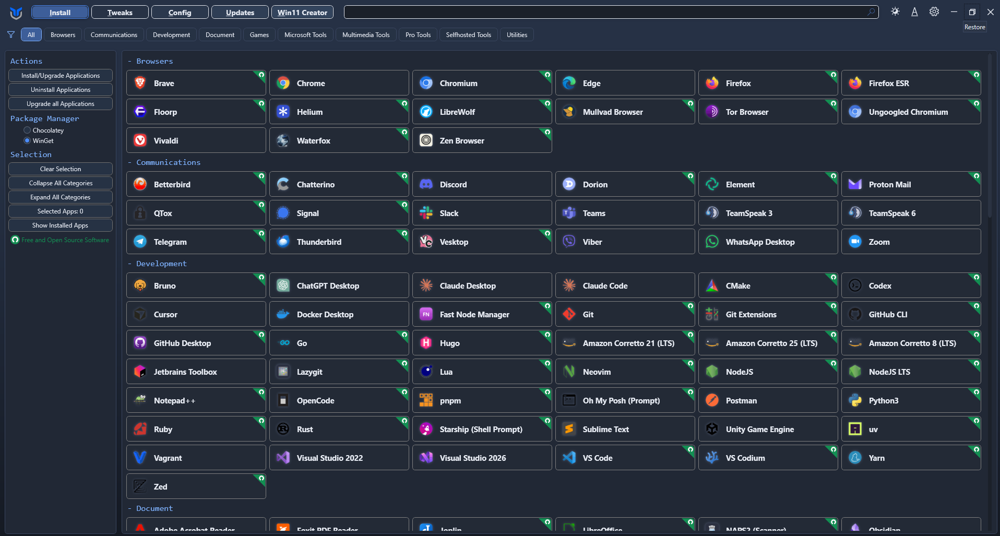

App installation
Find and install common desktop software without visiting multiple download pages.
Install desktop apps, adjust Windows settings, and run common maintenance tools from one interface.

SWJ Utility’s Install tab · Click to view full size
Version 1.0.2 Preview · Windows 11 (64-bit) · Unsigned
Download and extract the ZIP, then upload SWJ.exe to VirusTotal before running it. Scan results can miss threats.
Scan on VirusTotalFind and install common desktop software without visiting multiple download pages.
Access system configuration options and choose the changes that fit your setup.
Keep frequently used Windows administration and troubleshooting tools close at hand.
SammieWJ maintains SWJ Utility, a Windows app for installing software, adjusting system settings, and running maintenance tools.